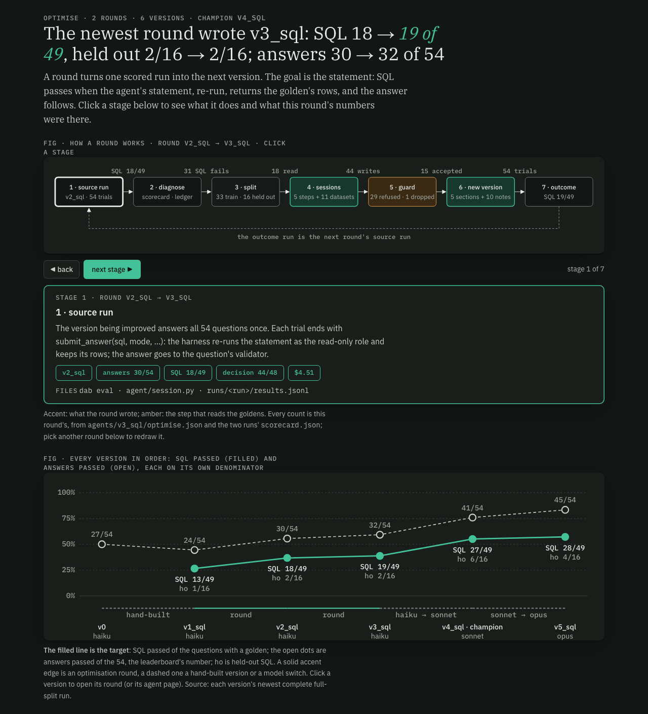
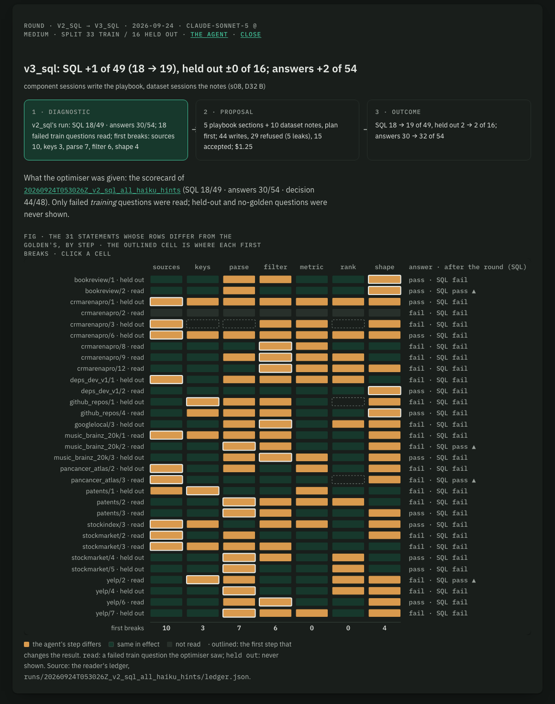

DataAgentBench · build receipt · 2026-09-25 · plan s08 (R1–R16, D32–D37) + v5_sql on request · branch challenger_v3 · one trial per question · figures are screenshots of the explorer on :8091
Round 2 ran as decided: a Sonnet reader wrote the seven-step ledger for every golden and failed statement, five component sessions wrote the SQL playbook into system.md, ten dataset sessions rewrote their notes, and the generator now submits a plan with its statement. The same prompt files then ran the 54 once on each model, all at medium effort: v3_sql (Haiku 4.5), v4_sql (Sonnet 5) and v5_sql (Opus 5.5). Only the model differs between them.
01 · verdict · dab promote (D36) · agents/promotions.jsonl
| version | model | answer | SQL | decision | held-out answer | held-out SQL |
|---|---|---|---|---|---|---|
| v0 | haiku | 27/54 | — | — | 10/16 | — |
| v1_sql | haiku | 24/54 | 13/49 | 40/41 | 6/16 | 1/16 |
| v2_sql | haiku | 30/54 | 18/49 | 44/48 | 8/16 | 2/16 |
| v3_sql | haiku 4.5 | 32/54 | 19/49 | 42/45 | 9/16 | 2/16 |
| v4_sql champion | sonnet 5 | 41/54 | 27/49 | 43/49 | 10/16 | 6/16 |
| v5_sql rule's pick | opus 5.5 | 45/54 | 28/49 | 46/49 | 12/16 | 4/16 |
02 · lifts · paired on the same questions · exact two-sided McNemar
Won = passed after and not before; lost = the reverse. p counts only the questions that changed. One trial each, so a single flip is one question.
| comparison | measure | before → after | won | lost | p |
|---|---|---|---|---|---|
| v2 → v3round 2's prompts, Haiku both | SQL, all | 18/49 → 19/49 | 4 | 3 | 1.0 |
| SQL, held out | 2/16 → 2/16 | 0 | 0 | 1.0 | |
| answers, all | 30/54 → 32/54 | 8 | 6 | 0.79 | |
| answers, held out | 8/16 → 9/16 | 3 | 2 | 1.0 | |
| v3 → v4Haiku → Sonnet 5 | SQL, all | 19/49 → 27/49 | 10 | 2 | 0.039 |
| SQL, held out | 2/16 → 6/16 | 4 | 0 | 0.125 | |
| answers, all | 32/54 → 41/54 | 12 | 3 | 0.035 | |
| answers, held out | 9/16 → 10/16 | 4 | 3 | 1.0 | |
| v4 → v5Sonnet 5 → Opus 5.5 | SQL, all | 27/49 → 28/49 | 4 | 3 | 1.0 |
| SQL, held out | 6/16 → 4/16 | 0 | 2 | 0.5 | |
| answers, all | 41/54 → 45/54 | 6 | 2 | 0.29 | |
| answers, held out | 10/16 → 12/16 | 3 | 1 | 0.63 | |
| v3 → v5Haiku → Opus 5.5 | SQL, all | 19/49 → 28/49 | 9 | 0 | 0.004 |
| answers, all | 32/54 → 45/54 | 14 | 1 | 0.001 |
The v2 → v3 row is confounded: v3 is the first version with a required plan, and that change cost Haiku seven submissions (section 04). The playbook's own effect on Haiku is not measured here.
Optimise tab · every version in order

03 · where statements break · the reader's ledger · runs/<id>/ledger.json
| category | v2_sql · haiku | v3_sql · haiku | v4_sql · sonnet | v5_sql · opus |
|---|---|---|---|---|
| solved | 17/49 | 19/49 | 25/49 | 28/49 |
| breaks at sources | 10 | 7 | 9 | 7 |
| breaks at keys | 3 | 1 | 0 | 0 |
| breaks at parse | 7 | 10 | 4 | 3 |
| breaks at filter | 6 | 3 | 3 | 2 |
| breaks at metric | 0 | 0 | 1 | 3 |
| breaks at rank | 0 | 1 | 1 | 3 |
| breaks at shape | 4 | 4 | 4 | 3 |
| no SQL | 1 | 4 | 0 | 0 |
| decision / format | 1 | 0 | 2 | 0 |
The five playbook sections targeted 16 failed train questions (sources 5, keys 1, parse 3, filter 4, shape 3); after the round 4 of 16 pass SQL on Haiku and 7 of 16 on Sonnet. Metric and rank got no section, since no failed train question broke there first in v2, and they are now where Opus fails 6 of its 21. Round 3's evidence should come from the champion's run.
Round v2_sql → v3_sql · the component matrix

04 · plan-first (D34) · traces
0 of 54 trials with an unparsed submit_answer; 55 submit calls; 2 never submitted.
43 of 54 trials with an unparsed submit; 123 submit calls; 5 answered in prose without submitting, 2 more ran out of the 30 turns. No SQL: 7 of 54.
26 of 54 trials with an unparsed submit; 84 submit calls; every trial recovered and submitted.
0 of 54 unparsed; 54 submit calls, one per trial; plan recorded 54 of 54; median 5 turns.
Of the 76 unparsed calls in v3, the 39 fully visible in the trace fail at the same place: "plan": followed by seven plain lines (sources: …) where the schema wants an object with seven keys. The other 37 are cut at 2,048 characters by the trace's span trimming. The retries cost turns and money, and for Haiku whole answers; part of Sonnet's extra cost over Opus ($6.59 against $5.04) is 30 extra submit calls.
Fix to decide: takeplanas one string of seven labelled lines (what the smaller models write anyway) and parse it inread_plan, or accept both shapes. It matters for Haiku and Sonnet, not for Opus.
05 · the new Optimise tab (D37 A) · /optimise
The figure in section 02 is the tab's top half: the seven-stage loop (source run, diagnose, split, sessions, guard, new version, outcome) with this round's counts on each stage (31 SQL fails, 18 read, 44 writes, 29 refused, 15 accepted), a step-through control and a stage panel; below it the chart of every version. A round's page (section 03's matrix) adds session cards with each write attempt, and the outcome with an SQL / answers toggle and held-out first. The chart's labels now sit centred under each point on two lines, so versions one question apart (v4, v5) no longer overlap.
06 · receipt · model spend on the subscription
| step | model | cost | what |
|---|---|---|---|
| ledger, v1 + v2 runs (R9) | sonnet 5 | $1.97 | 49 goldens read once and cached; 30 failed v2 statements compared |
| round 2 at 282 chars | sonnet 5 | $1.52 | superseded; archived in the scratchpad, never evaluated to the end |
| round 2 at 600 chars → v3_sql | sonnet 5 | $1.25 | 5 sections (589–598 of 600), 10 notes, 44 writes, 29 refused (5 for leaks), stockindex dropped |
| v3_sql eval | haiku 4.5 | $5.20 | 54 × 1, 22 min, prompt version 6 |
| v4_sql eval | sonnet 5 · medium | $6.59 | 54 × 1, 16 min, prompt version 7 |
| v5_sql eval | opus 5.5 · medium | $5.04 | 54 × 1, 6 min, prompt version 8 |
| ledger, v3 + v4 + v5 runs | sonnet 5 | $2.65 | $0.91 + $0.86 + $0.88; goldens from cache |
Not counted: the two partial evals of the 282-char versions (stopped at 11 and 12 of 54) and a first v5_sql attempt whose 32 trials failed with the bundled CLI's "model not supported" error; all three are still logged in MLflow, their folders in the scratchpad.
07 · what changed on the way from the s08 plan
system.md cap left 282 chars a section; raised to 8,000 on request and the round re-run. v3_sql's system.md is 6,573 chars.tests/test_optimise_guard.py).write_section; dataset sessions keep write_notes.dab version-model SRC --into NEW --model M made v4_sql and v5_sql: copies with only the model changed and measured_against set.opus alias now resolves to claude-opus-5-5 (was claude-opus-5).telemetry plugin is switched off as agents-md is; the account's organisation id (credential_org) joins the email on the allowlist, since the CLI has no switch for it. dab isolation-check passes on v5_sql.08 · open items · nothing committed on challenger_v3
.lavish/ pages s08 and s09 go with it.